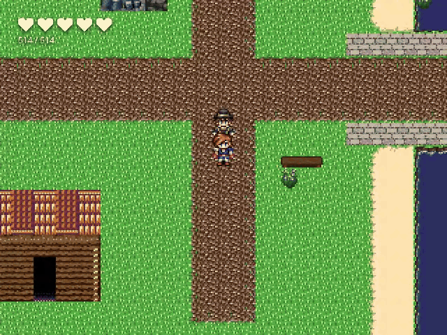
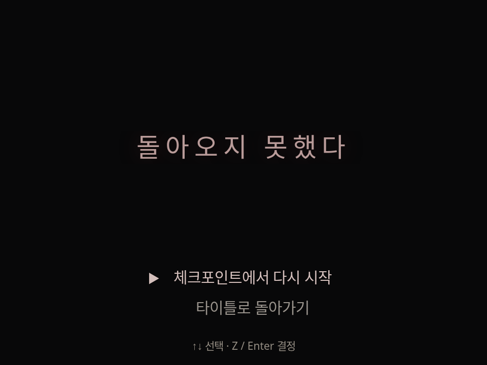
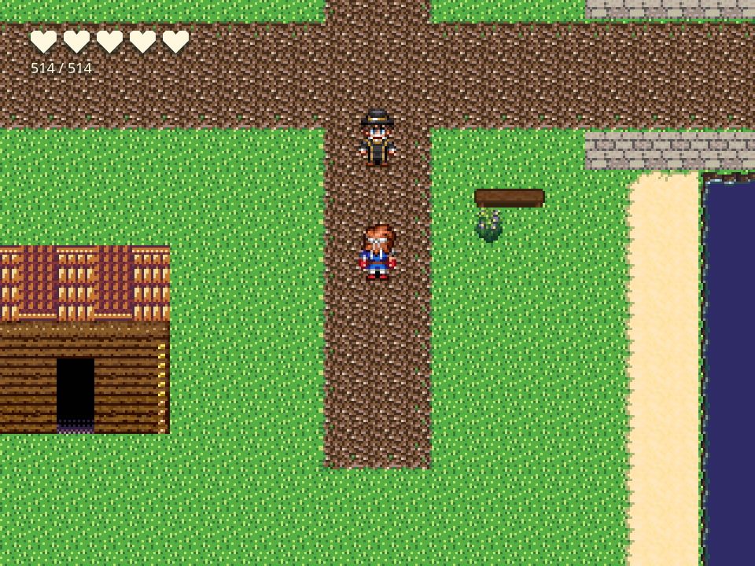
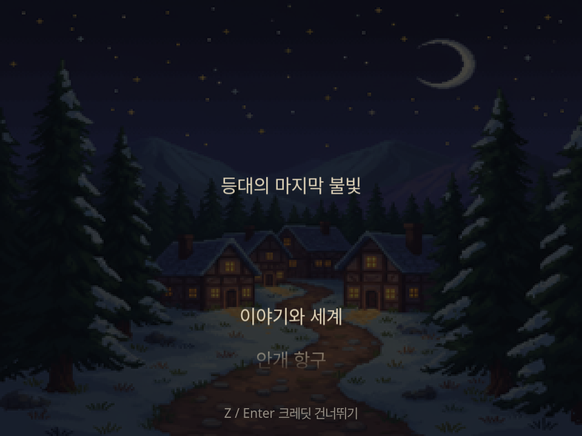
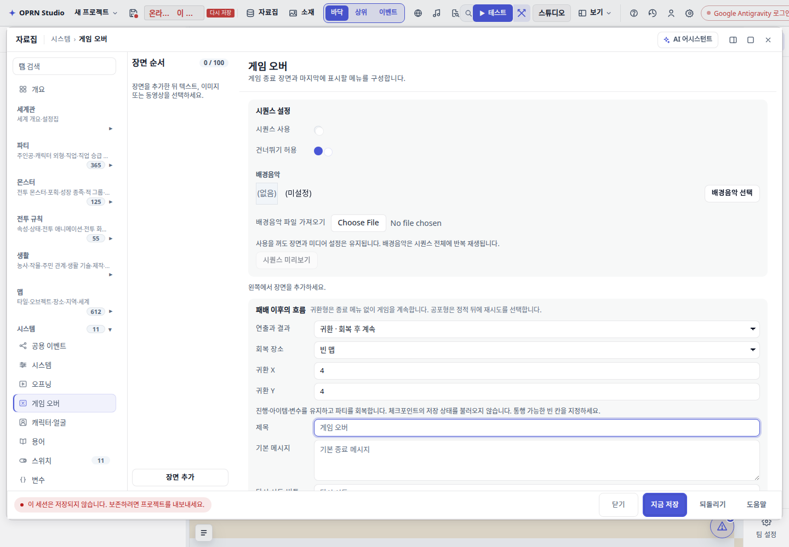

RUNTIME REVIEW · 2026.09.22
패배와 엔딩,
세 가지 흐름.
그림 한 장으로 통일했던 종료 화면을 바꿨습니다. 공포형의 정적, 귀환형의 진행 유지, 엔딩의 여운과 크레딧을 서로 다른 흐름으로 실행합니다.

실제 player.html 녹화 · 합성 프레임 없음 · 원래 속도 · GIF는 무음실제 화면

공포형은 기본 묘비 그림을 강제하지 않습니다.
HP 회복 후 이동 재개. 패배 직전의 진행을 유지합니다.
엔딩별 배경·음악·크레딧을 지정할 수 있습니다.확인한 동작
| 항목 | 관찰 결과 |
|---|
| 현재 진행 유지 | 귀환 후 변수 37 유지, HP 회복, (14,20) → (14,21) 실제 이동 |
| 종료 후 명령 | 변수 777을 쓰는 후속 명령 실행 차단 |
| 엔딩 크레딧 | 자동 완주 / 건너뛰기 / 모션 감소에서 수동 스크롤 확인 |
| 잘못된 귀환 위치 | 무한 암전 없이 재시도·타이틀 메뉴 제공 |
| 엔딩 음악 | 브라우저 재생 시간 증가 확인. 마지막 화면까지 유지 |
| 편집기 설정 | 흐름·좌표 변경 및 serialize → deserialize 값 유지 |
저작 화면

DB → 게임 오버에서 흐름과 회복 장소를 고릅니다. 엔딩의 분위기와 크레딧은 이벤트 명령에서, 엔딩별 배경·음악까지 포함한 설정은 define_ending에서 지정합니다.
검증 범위
전용 플레이어에서 7개 장르별 조건과 기존 클래식 5개 조건을 확인했습니다. 편집기와 런타임 확인 경로를 분리했습니다. 신규 테스트 코드는 추가했으며, 저장소 세션 규칙에 따라 Vitest·전체 typecheck·gates는 실행하지 않았습니다.
샘플 맵과 문구는 메모리 QA fixture입니다. 실제 SQLite 콘텐츠 저장이나 내보낸 ZIP 실행, 실제 몬스터 전투에서 시작하는 전체 패배 경로의 검증 결과로 해석하지 않습니다. 귀환 장소는 저작 좌표 또는 체크포인트/시작 위치이며, 동적 병원 기록과 금전 패널티를 자동 생성하지 않습니다.
상세 기록 · 기계 판독 근거